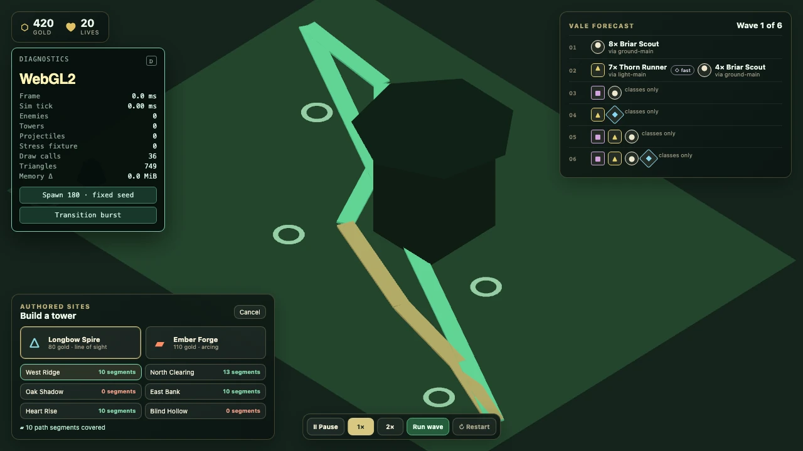
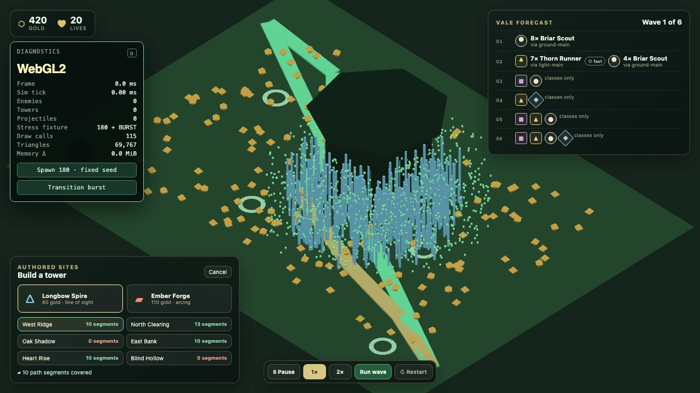

Constraint
The simulation must remain deterministic and testable without knowing about DOM, rendering, clocks or random globals.
CASE / Simulation / tower defense
Browser-native tower defense. Playable greybox, and an architecture argument.

HOW IT HOLDS UP
The simulation core, renderer, HUD and the boundary between them.
The simulation must remain deterministic and testable without knowing about DOM, rendering, clocks or random globals.
Enforce the boundary with TypeScript configuration and restricted ESLint paths, then interpolate fixed 1/30s snapshots for a separate three.js renderer.
Playable greybox: placement, waves and enough economy to lose.
SELECTED PROOF
RECORDED STATES


KEEP READING